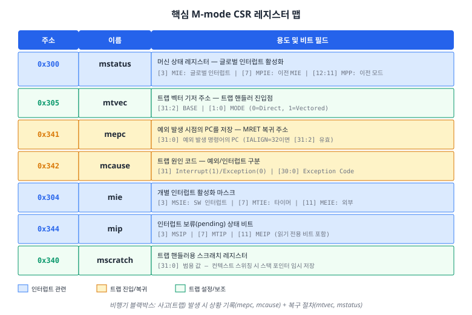
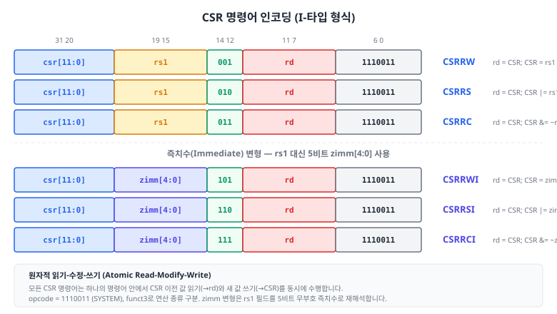
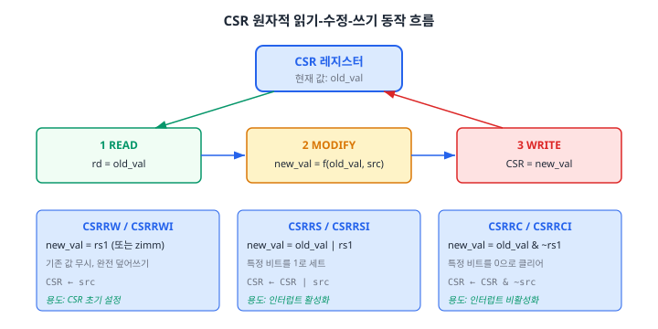
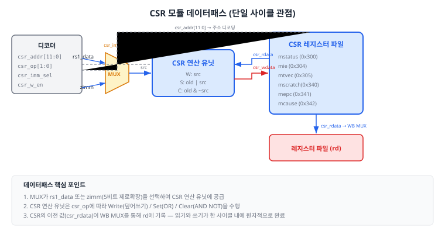

지금까지 우리가 설계한 파이프라인 프로세서는 산술, 논리, 분기, 메모리 접근 등 일반적인 명령어를 실행할 수 있습니다. 그러나 실제 프로세서가 "현실 세계"와 상호작용하려면, 내부 상태를 기록하고 관리하는 특별한 레지스터가 필요합니다. 이 챕터에서는 제어 및 상태 레지스터(Control and Status Register, CSR)의 개념을 이해하고, M-mode 핵심 CSR을 설계하며, CSR 명령어 6종을 구현합니다.
18.1 특권 수준과 CSR 레지스터
Chapter 17까지 우리는 UART, GPIO, 타이머 등 주변 장치를 AMBA 버스를 통해 프로세서에 연결하였습니다. 이제 자연스럽게 다음 질문이 떠오릅니다. 타이머가 만료되어 인터럽트 신호를 보내면, 프로세서는 어디서 이 사실을 감지하고, 어디에 현재 상태를 저장하며, 어디로 점프하여 인터럽트를 처리할까요? 바로 이 질문에 대한 답이 CSR(Control and Status Register)입니다.
프로세서의 "블랙박스" — CSR의 직관적 이해
비유: 여객기에는 비행 데이터 기록장치(Flight Data Recorder), 일명 "블랙박스"가 탑재되어 있습니다. 정상 비행 중에도 고도, 속도, 엔진 상태 등을 꾸준히 기록하며, 비상 상황 발생 시 당시 상태를 정확히 보존합니다. CSR은 프로세서의 블랙박스와 같습니다. 정상 실행 중에는 인터럽트 활성화 상태, 현재 특권 모드 등의 "비행 데이터"를 보관하고, 예외(Exception)나 인터럽트(Interrupt) 같은 "비상 상황" 발생 시 현재 PC, 원인 코드 등을 자동 기록하여 안전한 복귀를 보장합니다.
CSR은 기존에 배운 범용 레지스터 파일(x0~x31)과는 별도의 레지스터 공간입니다. 범용 레지스터가 산술 연산의 피연산자를 저장하는 "작업 공간"이라면, CSR은 프로세서의 운영 상태를 관리하는 "제어실"에 해당합니다. 두 레지스터 공간은 물리적으로 완전히 분리되어 있으며, 접근하는 명령어 집합도 다릅니다.
RISC-V 특권 수준 (Privilege Levels)
CSR을 이해하려면 먼저 RISC-V의 특권 수준(Privilege Level) 개념을 알아야 합니다. RISC-V 스펙은 최대 세 가지 특권 수준을 정의합니다.
수준
인코딩
이름
용도
3
11
Machine Mode (M-mode)
하드웨어에 대한 완전한 접근 권한. 리셋 후 최초 실행 모드
1
01
Supervisor Mode (S-mode)
운영체제 커널 실행. 가상 메모리 관리
0
00
User Mode (U-mode)
사용자 애플리케이션 실행
RISC-V 스펙에서 M-mode는 유일하게 필수적인(mandatory) 특권 수준입니다. S-mode와 U-mode는 선택 사항이며, 운영체제가 없는 임베디드 시스템에서는 M-mode만으로도 충분합니다. 우리가 설계하는 RV32I 프로세서는 Basys 3 FPGA 위에서 운영체제 없이 동작하므로, M-mode만 구현합니다. 이 결정 덕분에 CSR의 범위가 대폭 줄어들어 학습 부담이 크게 경감됩니다.
그림 18.1: RISC-V 특권 수준 구조. M-mode는 가장 높은 특권 수준으로, 모든 CSR에 접근할 수 있습니다. 우리 프로세서는 M-mode만 구현하며, S-mode와 U-mode는 회색 점선으로 표시하여 구현 범위 밖임을 나타냅니다.
CSR 주소 공간
CSR은 12비트 주소로 식별되므로, 이론적으로 최대 4,096개의 CSR이 존재할 수 있습니다. 그러나 실제로 구현해야 하는 CSR은 소수입니다. CSR 주소의 상위 4비트([11:8])는 접근 권한과 읽기/쓰기 속성을 인코딩합니다.
주소 비트 [11:10]
의미
00, 01, 10
읽기/쓰기(Read/Write) 가능
11
읽기 전용(Read-Only)
주소 비트 [9:8]
최소 특권 수준
00
User
01
Supervisor
11
Machine
예를 들어, mstatus의 주소 0x300은 이진수로 0011_0000_0000입니다. 상위 2비트 00은 읽기/쓰기 가능을, 다음 2비트 11은 Machine 모드 이상에서만 접근 가능함을 의미합니다. 이 인코딩 규칙 덕분에, 하드웨어는 CSR 주소만으로 접근 권한을 빠르게 판별할 수 있습니다.
Zicsr 확장
CSR 명령어(CSRRW, CSRRS, CSRRC 등)는 RISC-V의 Zicsr 확장(extension)에 정의되어 있습니다. "Zicsr"에서 "Z"는 표준 확장, "i"는 정수 관련, "csr"은 CSR 접근을 의미합니다. RV32I 기본 사양에 포함된 ECALL/EBREAK와 달리, CSR 명령어는 기술적으로 확장입니다. 그러나 실질적으로 거의 모든 RISC-V 구현이 Zicsr을 포함합니다. 예외/인터럽트 처리가 없는 프로세서는 실용적이지 않기 때문입니다.
18.2 핵심 CSR 구현
이제 우리 프로세서에서 실제로 구현할 7개의 M-mode CSR을 하나씩 상세히 살펴보겠습니다. 각 CSR의 역할, 비트 필드, 그리고 하드웨어에서의 동작 방식을 이해하는 것이 목표입니다. 이 7개 레지스터를 모두 이해하면, Chapter 19에서 예외와 인터럽트를 파이프라인에 통합하는 과정이 자연스럽게 따라올 것입니다.

그림 18.2: 핵심 M-mode CSR 레지스터 맵. 인터럽트 관련(mstatus, mie, mip), 트랩 진입/복귀(mepc, mcause), 트랩 설정/보조(mtvec, mscratch)로 분류됩니다.
mstatus (0x300) — 머신 상태 레지스터
mstatus는 CSR 중에서 가장 중요한 레지스터입니다. 이 레지스터의 핵심 비트 필드 세 가지를 살펴보겠습니다.
비트
필드
설명
[3]
MIE (Machine Interrupt Enable)
글로벌 인터럽트 활성화. 1이면 인터럽트 수신 가능, 0이면 모든 인터럽트 차단
[7]
MPIE (Machine Previous Interrupt Enable)
트랩 진입 직전의 MIE 값을 보존. MRET 실행 시 MIE 복원에 사용
[12:11]
MPP (Machine Previous Privilege)
트랩 진입 직전의 특권 모드. M-mode만 구현 시 항상 2'b11
트랩 진입 시 하드웨어가 자동으로 수행하는 mstatus 갱신은 다음과 같습니다.
MPIE ← MIE (현재 인터럽트 상태를 "이전 상태"로 백업)
MIE ← 0 (인터럽트 비활성화 — 트랩 처리 중 중첩 인터럽트 방지)
MPP ← 현재 특권 모드 (M-mode only이면 항상 2'b11)
MRET(트랩 복귀) 명령어 실행 시에는 이 과정이 역순으로 진행됩니다.
MIE ← MPIE (백업해 두었던 인터럽트 상태 복원)
MPIE ← 1
MPP ← 최저 지원 모드 (M-mode only이면 2'b11 유지)
비유: mstatus.MIE는 사무실의 "방해 금지(Do Not Disturb)" 표지판과 같습니다. 표지판이 내려가면(MIE=1) 방문객(인터럽트)을 받습니다. 긴급 회의(트랩)가 시작되면, 하드웨어가 자동으로 표지판을 올리고(MIE=0), 이전 상태를 메모지(MPIE)에 적어 둡니다. 회의가 끝나면(MRET), 메모지를 보고 원래 표지판 상태를 복원합니다.
mtvec (0x305) — 트랩 벡터 기저 주소
mtvec은 트랩(예외 또는 인터럽트) 발생 시 프로세서가 점프할 트랩 핸들러(Trap Handler)의 주소를 저장합니다. 하위 2비트([1:0])는 MODE 필드로, 트랩 처리 방식을 결정합니다.
MODE
이름
동작
0
Direct
모든 트랩이 BASE 주소로 점프
1
Vectored
예외는 BASE로, 인터럽트는 BASE + 4 × cause로 점프
우리 구현에서는 Direct 모드(MODE=0)를 채택합니다. 이 경우 mtvec의 상위 30비트([31:2])가 트랩 핸들러의 기저 주소(BASE)가 됩니다. Direct 모드가 구현이 간단하면서도 실무에서 널리 사용되기 때문입니다.
mepc (0x341) — 예외 PC
mepc는 트랩이 발생한 시점의 PC를 저장합니다. 트랩 핸들러가 처리를 마친 후 MRET 명령어를 실행하면, 프로세서는 mepc에 저장된 주소로 복귀합니다. RV32I에서 모든 명령어는 4바이트 정렬이므로, mepc의 하위 2비트는 항상 0입니다.
mepc에 저장되는 값은 트랩 종류에 따라 다릅니다.
동기 예외(Synchronous Exception): 예외를 발생시킨 명령어 자체의 PC
비동기 인터럽트(Asynchronous Interrupt): 인터럽트에 의해 실행이 중단된 다음 명령어의 PC
mcause (0x342) — 트랩 원인
mcause는 트랩의 원인을 기록합니다. 최상위 비트([31])가 1이면 인터럽트, 0이면 예외입니다. 나머지 비트([30:0])는 원인 코드를 나타냅니다.
Interrupt
Exception Code
설명
1
3
Machine Software Interrupt (소프트웨어 인터럽트)
1
7
Machine Timer Interrupt (타이머 인터럽트)
1
11
Machine External Interrupt (외부 인터럽트)
0
0
Instruction Address Misaligned
0
2
Illegal Instruction (미정의 명령어)
0
4
Load Address Misaligned
0
6
Store/AMO Address Misaligned
0
11
Environment Call from M-mode (ECALL)
mie (0x304)와 mip (0x344) — 인터럽트 활성화와 보류
mie와 mip는 쌍을 이루어 동작합니다. mie는 각 인터럽트 소스의 개별 활성화 마스크이고, mip는 각 소스의 보류(pending) 상태를 나타냅니다.
여기서 |은 비트별 OR의 축약(reduction OR) 연산자입니다. mie & mip의 결과에서 하나라도 1인 비트가 있으면 인터럽트가 보류된 것입니다.
mscratch (0x340) — 스크래치 레지스터
mscratch는 소프트웨어가 자유롭게 사용할 수 있는 32비트 범용 레지스터입니다. 주로 트랩 핸들러 진입 시 스택 포인터를 임시로 저장하는 용도로 활용됩니다. 트랩이 발생하면 범용 레지스터를 보존해야 하는데, 보존하려면 메모리에 써야 하고, 메모리에 쓰려면 스택 포인터가 필요합니다. 이 "닭과 달걀" 문제를 mscratch가 해결합니다.
// 트랩 핸들러 진입 시 전형적인 어셈블리 패턴:
// csrrw sp, mscratch, sp // sp ↔ mscratch 교환 (원자적)
// sw ra, 0(sp) // 이제 안전하게 레지스터 저장 가능
// sw a0, 4(sp)
// ...
CSR 레지스터 파일 SystemVerilog 구현
이제 위에서 분석한 7개 CSR을 하나의 모듈로 구현합니다. 핵심 설계 결정은 다음과 같습니다.
읽기: 조합 논리(비동기) — CSR 주소가 주어지면 즉시 값 출력
쓰기: 순차 논리(클럭 동기) — 클럭 상승 에지에서 갱신
트랩 진입/복귀: 소프트웨어 쓰기보다 높은 우선순위
WARL 속성: mstatus의 미구현 비트는 항상 0을 읽도록 마스킹
// ============================================================================
// CSR 레지스터 파일 (CSR Register File)
// M-mode 핵심 CSR: mstatus, mie, mtvec, mscratch, mepc, mcause, mip
// ============================================================================
module csr_register_file (
input logic clk,
input logic rst_n,
// CSR 읽기/쓰기 인터페이스
input logic [11:0] csr_addr, // CSR 주소 (12비트)
input logic [31:0] csr_wdata, // CSR 쓰기 데이터
input logic csr_w_en, // CSR 쓰기 인에이블
output logic [31:0] csr_rdata, // CSR 읽기 데이터
// 트랩 처리 인터페이스
input logic trap_enter, // 트랩 진입 신호
input logic [31:0] trap_pc, // → mepc에 저장
input logic [31:0] trap_cause, // → mcause에 저장
input logic mret_exec, // MRET 명령어 실행
// 인터럽트 입력
input logic ext_irq, // 외부 인터럽트
input logic timer_irq, // 타이머 인터럽트
input logic sw_irq, // 소프트웨어 인터럽트
// 출력
output logic [31:0] mtvec_out, // 트랩 벡터 주소
output logic [31:0] mepc_out, // MRET 복귀 주소
output logic irq_pending, // 인터럽트 보류
output logic csr_access_fault
);
// CSR 주소 상수
localparam logic [11:0] ADDR_MSTATUS = 12'h300;
localparam logic [11:0] ADDR_MIE = 12'h304;
localparam logic [11:0] ADDR_MTVEC = 12'h305;
localparam logic [11:0] ADDR_MSCRATCH = 12'h340;
localparam logic [11:0] ADDR_MEPC = 12'h341;
localparam logic [11:0] ADDR_MCAUSE = 12'h342;
localparam logic [11:0] ADDR_MIP = 12'h344;
// CSR 레지스터 선언
logic [31:0] mstatus, mie, mtvec, mscratch, mepc, mcause, mip;
// mstatus 비트 위치
localparam int MIE_BIT = 3, MPIE_BIT = 7, MPP_LO = 11, MPP_HI = 12;
// mip — 외부 신호에 의해 갱신 (읽기 전용)
always_comb begin
mip = 32'b0;
mip[3] = sw_irq; // MSIP
mip[7] = timer_irq; // MTIP
mip[11] = ext_irq; // MEIP
end
// 인터럽트 보류 판정
assign irq_pending = mstatus[MIE_BIT] & |(mie & mip);
// CSR 읽기 (조합 논리)
always_comb begin
csr_rdata = 32'b0;
csr_access_fault = 1'b0;
case (csr_addr)
ADDR_MSTATUS: csr_rdata = mstatus;
ADDR_MIE: csr_rdata = mie;
ADDR_MTVEC: csr_rdata = mtvec;
ADDR_MSCRATCH: csr_rdata = mscratch;
ADDR_MEPC: csr_rdata = mepc;
ADDR_MCAUSE: csr_rdata = mcause;
ADDR_MIP: csr_rdata = mip;
default: begin
csr_rdata = 32'b0;
csr_access_fault = csr_w_en;
end
endcase
end
// CSR 쓰기 (순차 논리 — 우선순위: 트랩 > MRET > 소프트웨어 쓰기)
always_ff @(posedge clk or negedge rst_n) begin
if (!rst_n) begin
mstatus <= 32'h0000_1800; // MPP = M-mode
mie <= 32'b0;
mtvec <= 32'b0;
mscratch <= 32'b0;
mepc <= 32'b0;
mcause <= 32'b0;
end
else if (trap_enter) begin
mepc <= trap_pc;
mcause <= trap_cause;
mstatus[MPIE_BIT] <= mstatus[MIE_BIT];
mstatus[MIE_BIT] <= 1'b0;
mstatus[MPP_HI:MPP_LO] <= 2'b11;
end
else if (mret_exec) begin
mstatus[MIE_BIT] <= mstatus[MPIE_BIT];
mstatus[MPIE_BIT] <= 1'b1;
mstatus[MPP_HI:MPP_LO] <= 2'b11;
end
else if (csr_w_en) begin
case (csr_addr)
ADDR_MSTATUS: begin
mstatus[MIE_BIT] <= csr_wdata[MIE_BIT];
mstatus[MPIE_BIT] <= csr_wdata[MPIE_BIT];
mstatus[MPP_HI:MPP_LO] <= 2'b11;
end
ADDR_MIE: mie <= csr_wdata & 32'h0000_0888;
ADDR_MTVEC: mtvec <= {csr_wdata[31:2], 2'b00};
ADDR_MSCRATCH: mscratch <= csr_wdata;
ADDR_MEPC: mepc <= {csr_wdata[31:2], 2'b00};
ADDR_MCAUSE: mcause <= csr_wdata;
default: ;
endcase
end
end
assign mtvec_out = mtvec;
assign mepc_out = mepc;
endmodule
위 코드에서 주목할 설계 결정을 정리합니다.
우선순위: trap_enter > mret_exec > csr_w_en 순서로 if-else 체인을 구성합니다. 트랩 진입은 모든 소프트웨어 동작보다 우선합니다.
WARL 마스킹: mie에 쓸 때 32'h0000_0888으로 AND하여, MSIE(비트 3), MTIE(비트 7), MEIE(비트 11)만 쓰기를 허용합니다.
CSR 레지스터를 설계했으니, 이제 소프트웨어가 CSR에 접근하는 수단인 CSR 명령어 6종을 구현할 차례입니다. 이 명령어들은 RISC-V Zicsr 확장에 정의되어 있으며, 모두 I-타입 형식을 사용합니다. 명령어의 opcode는 1110011(SYSTEM)이고, funct3 필드로 연산 종류를 구분합니다.
CSR 명령어 인코딩

그림 18.3: CSR 명령어 6종의 비트 필드 인코딩. 상단 3개(CSRRW/CSRRS/CSRRC)는 rs1 레지스터를 소스로, 하단 3개(CSRRWI/CSRRSI/CSRRCI)는 5비트 즉치수(zimm)를 소스로 사용합니다.
명령어
funct3
소스
동작
의사 코드
CSRRW
001
rs1
Write (덮어쓰기)
rd = CSR; CSR = rs1
CSRRS
010
rs1
Set (비트 세트)
rd = CSR; CSR = CSR | rs1
CSRRC
011
rs1
Clear (비트 클리어)
rd = CSR; CSR = CSR & ~rs1
CSRRWI
101
zimm
Write Immediate
rd = CSR; CSR = zimm
CSRRSI
110
zimm
Set Immediate
rd = CSR; CSR = CSR | zimm
CSRRCI
111
zimm
Clear Immediate
rd = CSR; CSR = CSR & ~zimm
원자적 읽기-수정-쓰기 (Atomic Read-Modify-Write)
모든 CSR 명령어의 가장 중요한 특성은 원자적(atomic)이라는 점입니다. 하나의 명령어 안에서 CSR의 이전 값을 읽어 rd에 저장하고, 동시에 새 값을 CSR에 쓰는 동작이 분리 불가능하게 수행됩니다. 이 원자성은 두 가지 실용적 의미를 가집니다.
읽기와 쓰기 사이에 인터럽트가 끼어들 수 없습니다. 예를 들어, mstatus.MIE를 비활성화하는 동안 인터럽트가 발생하면, 이전 MIE 값이 손실될 수 있습니다. 원자적 연산은 이를 방지합니다.
CSR의 이전 값을 항상 안전하게 백업할 수 있습니다.CSRRW rd, csr, rs1은 한 번의 명령어로 "읽고 쓰기"를 완료하므로, 별도의 읽기 명령어가 필요 없습니다.

그림 18.4: CSR 원자적 읽기-수정-쓰기의 3단계 흐름과 세 가지 연산(Write/Set/Clear)의 비교.
funct3 인코딩 패턴
funct3의 비트 구조를 분석하면, 디코딩 로직이 매우 간결해집니다.
funct3[2]: 소스 선택 — 0이면 rs1 레지스터, 1이면 zimm(5비트 무부호 즉치수)
funct3[1:0]: 연산 선택 — 01=Write, 10=Set, 11=Clear
이 패턴을 SystemVerilog로 표현하면 다음과 같습니다.
// funct3 디코딩
assign use_zimm = funct3[2]; // 즉치수 변형 여부
assign csr_op = funct3[1:0]; // 연산 타입 (W/S/C)
// 소스 데이터 선택 MUX
// zimm: rs1 필드(5비트)를 무부호 즉치수로 제로 확장하여 32비트로 변환
assign src_data = use_zimm ? {27'b0, rs1_addr} : rs1_data;
쓰기 인에이블 결정 — 사이드이펙트(Side Effect) 방지
RISC-V 스펙은 CSR 명령어의 사이드이펙트에 관한 중요한 규칙을 정의합니다.
CSRRW/CSRRWI: rd = x0이면 CSR 읽기를 수행하지 않습니다. 그러나 쓰기는 항상 수행합니다.
이 규칙의 실용적 의미를 살펴봅시다. CSRRS rd, mstatus, x0은 mstatus의 값을 rd에 읽기만 하고, mstatus에는 아무 변경도 가하지 않습니다. 이것이 바로 어셈블리 의사 명령어 csrr rd, csr(CSR 읽기)의 구현입니다. 또한 일부 CSR은 쓰기 시 사이드이펙트(예: 캐시 플러시, TLB 무효화)를 발생시키므로, 불필요한 쓰기를 방지하는 것이 중요합니다.
// 쓰기 인에이블 결정
always_comb begin
if (!csr_en) begin
csr_w_en = 1'b0;
end
else if (csr_op == 2'b01) begin
// CSRRW/CSRRWI — 항상 쓰기
csr_w_en = 1'b1;
end
else begin
// CSRRS/CSRRC — rs1 == x0 (또는 zimm == 0)이면 쓰기 안 함
csr_w_en = (rs1_addr != 5'b0);
end
end
CSR ALU 구현
CSR 연산 유닛은 기존 ALU와 별도의 간단한 조합 논리 모듈입니다. 세 가지 연산만 수행하면 됩니다.
module csr_alu (
input logic [31:0] csr_rdata, // CSR 현재 값
input logic [31:0] src_data, // rs1 또는 zimm (제로 확장)
input logic [1:0] csr_op, // 연산 선택
output logic [31:0] csr_wdata // CSR에 쓸 새 값
);
localparam logic [1:0] CSR_WRITE = 2'b01;
localparam logic [1:0] CSR_SET = 2'b10;
localparam logic [1:0] CSR_CLEAR = 2'b11;
always_comb begin
case (csr_op)
CSR_WRITE: csr_wdata = src_data; // 덮어쓰기
CSR_SET: csr_wdata = csr_rdata | src_data; // 비트 세트
CSR_CLEAR: csr_wdata = csr_rdata & (~src_data); // 비트 클리어
default: csr_wdata = csr_rdata; // 변경 없음
endcase
end
endmodule
CSR 유닛 상위 모듈
CSR ALU와 CSR 레지스터 파일을 통합하는 상위 모듈의 데이터패스를 그림 18.5에 나타냅니다.

그림 18.5: CSR 유닛 데이터패스. 디코더에서 CSR 주소, 연산 타입, 소스 선택 신호를 받아, MUX가 rs1_data 또는 zimm을 선택하고, CSR ALU가 원자적 읽기-수정-쓰기를 수행합니다. CSR의 이전 값은 WB MUX를 통해 rd에 기록됩니다.
상위 모듈 csr_unit은 다음 세 가지 작업을 수행합니다.
funct3 디코딩: use_zimm(소스 선택), csr_op(연산 타입), csr_w_en(쓰기 인에이블) 결정
MUX: rs1_data 또는 zimm(제로 확장) 중 하나를 src_data로 선택
인스턴스화: csr_alu와 csr_register_file 연결
18.4 CSR 동작 확인 미니 실습
이제 앞에서 설계한 CSR 유닛이 정확하게 동작하는지 시뮬레이션으로 검증합니다. 이번 실습에서는 CSR 모듈을 단독으로 테스트합니다. 파이프라인과의 통합은 Chapter 19에서 다루므로, 지금은 CSR 자체의 동작에만 집중합니다.
검증 시나리오 설계
테스트벤치가 검증할 시나리오는 다음과 같습니다.
#
시나리오
검증 목표
1
CSRRW로 mtvec 설정
Write 연산, 트랩 벡터 주소 4바이트 정렬
2
CSRRS로 mstatus.MIE 세트
Set 연산, 특정 비트만 변경
3
CSRRC로 mstatus.MIE 클리어
Clear 연산, 다른 비트 보존 확인
4
CSRRWI로 mscratch 쓰기
즉치수 변형, 5비트 제로 확장
5
CSRRSI로 mie 비트 세트
즉치수 Set, 인터럽트 활성화 마스크
6
트랩 진입 → MRET 복귀
하드웨어 자동 mstatus 갱신, mepc/mcause 저장/복원
테스트벤치 핵심 코드
완전한 테스트벤치 코드는 code_examples/ch18_csr_tb.sv에 수록되어 있습니다. 여기서는 가장 중요한 시나리오인 "테스트 6: 트랩 진입/복귀"의 핵심 부분을 발췌하여 설명합니다.
// ==============================
// 테스트 6: 트랩 진입 → MRET 복귀 시퀀스
// ==============================
// 1단계: mstatus.MIE 활성화 (CSRRS 사용)
csr_write(MSTATUS, 5'd1, 32'h0000_0008, FUNCT3_CSRRS);
@(posedge clk);
// 2단계: 트랩 진입 (하드웨어 자동 처리)
trap_enter = 1'b1;
trap_pc = 32'h0000_0100; // 트랩 발생 시 PC
trap_cause = 32'h0000_000B; // ECALL from M-mode
@(posedge clk);
trap_enter = 1'b0;
@(posedge clk);
// 검증: mepc에 트랩 발생 PC가 저장되었는가?
assert (mepc_out == 32'h0000_0100)
else $error("mepc 저장 실패: 0x%08h", mepc_out);
// 검증: mstatus.MIE=0, MPIE=1로 변경되었는가?
// (트랩 처리 중 인터럽트 비활성화, 이전 상태 보존)
// 3단계: MRET 실행 (트랩 복귀)
mret_exec = 1'b1;
@(posedge clk);
mret_exec = 1'b0;
@(posedge clk);
// 검증: mstatus.MIE가 1로 복원되었는가?
// (MPIE에 백업된 값이 MIE로 복원)
시뮬레이션 실행 방법
Vivado Simulator를 사용하는 경우, 다음 절차로 시뮬레이션을 실행합니다.
Vivado에서 새 시뮬레이션 소스 세트(Simulation Set)를 생성합니다.
ch18_csr_alu.sv, ch18_csr_register_file.sv, ch18_csr_unit.sv를 디자인 소스로 추가합니다.
ch18_csr_tb.sv를 시뮬레이션 소스로 추가합니다.
"Run Simulation → Run Behavioral Simulation"을 실행합니다.
Tcl 콘솔에서 테스트 결과(PASS/FAIL)를 확인합니다.
VCS를 사용하는 경우:
# VCS 컴파일 및 시뮬레이션
vcs -sverilog ch18_csr_alu.sv ch18_csr_register_file.sv \
ch18_csr_unit.sv ch18_csr_tb.sv -o csr_sim
./csr_sim
예상 시뮬레이션 결과
테스트벤치가 정상적으로 실행되면, 다음과 같은 출력이 나타납니다.
[TEST 1] CSRRW: mtvec에 트랩 벡터 주소 0x10000000 설정
PASS: mtvec = 0x10000000
[TEST 2] CSRRS: mstatus.MIE 비트 세트 (글로벌 인터럽트 활성화)
PASS: mstatus.MIE = 1
[TEST 3] CSRRC: mstatus.MIE 비트 클리어 (글로벌 인터럽트 비활성화)
PASS: mstatus.MIE = 0
[TEST 4] CSRRWI: mscratch에 즉치수 값 17 쓰기
PASS: mscratch = 17
[TEST 5] CSRRSI: mie.MSIE (비트 3) 세트
PASS: mie.MSIE = 1 (비트 3 세트)
[TEST 6] 트랩 진입 → MRET 복귀 시퀀스
PASS: mepc = 0x00000100 (트랩 발생 PC 저장됨)
PASS: 트랩 진입 후 MIE=0, MPIE=1 (인터럽트 비활성화, 이전 상태 보존)
PASS: MRET 후 MIE=1 복원 (인터럽트 재활성화)
========================================
테스트 결과: 8 PASS / 0 FAIL
========================================
>>> 모든 테스트 통과! CSR 유닛이 정상 동작합니다. <<<
파형 분석 포인트
시뮬레이션 파형에서 다음 신호들을 주의 깊게 관찰하십시오.
csr_rdata: CSR 읽기 값이 rd에 전달되기 전의 원본. CSRRW 실행 시 이 값이 이전 CSR 값과 일치하는지 확인합니다.
csr_wdata: CSR ALU의 출력. CSRRS 실행 시 csr_rdata | src_data와 일치하는지 확인합니다.
mstatus[3] (MIE 비트): 트랩 진입 시 0으로 변경되고, MRET 실행 시 복원되는 과정을 추적합니다.
mstatus[7] (MPIE 비트): 트랩 진입 시 이전 MIE 값이 저장되는지 확인합니다.
irq_pending: mstatus.MIE=1, mie 해당 비트=1, mip 해당 비트=1 조건이 모두 충족될 때만 1이 되는지 확인합니다.
18.5 본 챕터 요약 및 다음 단계
이번 챕터에서는 RISC-V 프로세서의 제어 및 상태 레지스터(CSR) 시스템을 설계하였습니다. CSR은 프로세서의 "블랙박스"로서, 예외와 인터럽트 처리의 기반을 제공합니다.
핵심 정리
특권 수준: RISC-V는 M/S/U 세 가지 특권 수준을 정의하며, M-mode만이 필수입니다. 우리 프로세서는 M-mode만 구현하여 CSR 범위를 7개로 한정합니다.
CSR 주소 공간: 12비트 주소(최대 4,096개)이며, 상위 4비트가 읽기/쓰기 속성과 최소 특권 수준을 인코딩합니다.
이번 챕터에서 설계한 CSR 모듈은 아직 프로세서 파이프라인에 연결되지 않은 "독립 모듈"입니다. Chapter 19 "예외/인터럽트와 파이프라인 통합"에서는 이 모듈을 5단계 파이프라인에 통합합니다. 동기 예외(Illegal Instruction, ECALL 등)와 비동기 인터럽트(타이머, 외부)를 감지하고, 정확한 예외(Precise Exception)를 보장하며, CSR 해저드를 처리하는 방법을 다룹니다. 이번 챕터에서 CSR의 동작 원리를 확실히 이해해 두었으므로, 파이프라인 통합 과정이 한결 수월할 것입니다.